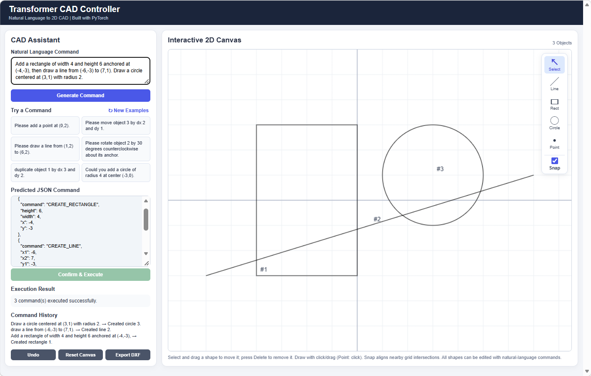

Natural Language Control
Create, transform, query, duplicate, and delete geometry using English instructions. Multi-command inputs are split and executed sequentially.
An interactive CAD application that turns English instructions into executable drawing commands. Its lightweight causal Transformer was built and trained from scratch in PyTorch—without a pretrained LLM or external AI inference API—and works alongside manual 2D drawing tools.

NLCAD web interface: command generation, editable JSON, and an interactive 2D canvas.
Create and modify CAD geometry using natural language, review the generated JSON, and combine AI commands with direct canvas editing.
Create, transform, query, duplicate, and delete geometry using English instructions. Multi-command inputs are split and executed sequentially.
Draw, select, drag, and edit objects directly on the canvas. Grid snapping, undo, command history, and DXF export support a hybrid workflow.
Line, rectangle, circle, point
Move, rotate, length, color, width
Delete, duplicate, select
Count, filter, find, inspect properties
Clear canvas, undo
Inspect and modify JSON before execution
The same object state is shared between language-based operations and manual CAD interactions.
Natural Language Input
Text
Draw a circle centered at (3,3) with radius 2. Duplicate object 1 by dx 4 and dy 1. Set the color of object 2 to blue.
Generated JSON Commands
JSON 1
{
"command": "CREATE_CIRCLE",
"x": 3,
"y": 3,
"radius": 2
}JSON 2
{
"command": "DUPLICATE_OBJECT",
"id": 1,
"dx": 4,
"dy": 1
}JSON 3
{
"command": "SET_COLOR",
"id": 2,
"color": "blue"
}A visualization of model snapshots across 50 epochs, showing Q/K/V projection weights, token embeddings, causal attention, optimization curves, and prediction examples.
Tip: the matrix evolution is easier to observe at higher playback speed. Try 8× for a clearer view of the changing patterns.
Visualization based on recorded model training snapshots.
Exact match requires the generated command and its parameters to match the reference JSON.
From-scratch Transformer: custom tokenization, masked self-attention, and autoregressive JSON decoding.
Reliable execution: predefined command schemas and user-editable predictions before applying changes.
Full-stack deployment: FastAPI inference with an interactive JavaScript/Canvas CAD interface and DXF export.
Note: The live demo runs on a shared cloud server, so response and model inference times may be slower than when running locally.